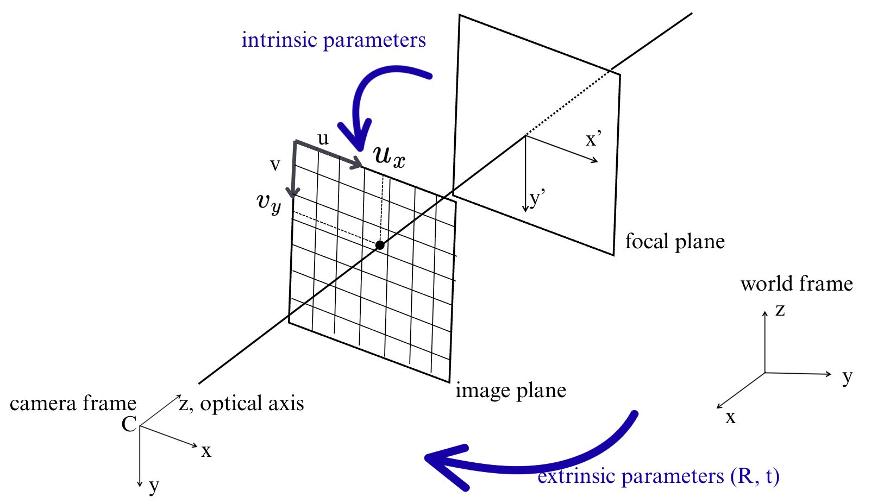

Chapter 1. Camera Calibration#
해당 챕터는 이 사이트를 기반으로 만들었다. 개념은 최대한 간단히 하되, 연습 문제를 넣어서 문제를 통해 학습할 수 있도록 구성하였다.
Camera Calibration#
정의: 카메라의 instrinsic and extrinsic parameters를 결정하는 것
효과: 이를 통해 pinhole camera로 찍힌 사진의 왜곡 (distortion)을 제거하도록 한다.
그렇다면, instrinsic parameters란, 카메라 내부 특성들을 말한다. 예를 들어, focal length, its image center등이 있다. extrinsic parameters란 카메라 외적의 특성들 예를 들어, world frame내에서 translation and rotation 등을 의미한다.
핀홀 카메라: 아주 작은 구멍 하나로 빛을 모아 이미지를 형성하는 가장 단순한 모델. 렌즈 없음
핀홀 카메라 모델: 수학적으로는 3D 점을 2D 평면으로 사영(project)하는투영 모델 (perspective projection).사영 (projection): 3D를 2D로 옮기는 큰 틀의 개념
투영 (perspective projection): 사영 (projection) 중 원근을 반영한 특수한 방식
카메라 모델 (핀홀 카메라)의 방식으로 한 점 (카메라 중심, pinhole)을 기준으로 직선을 그어 평면에 교차시켜 대응시키는 방식.
수학적으로 투영 (원근 사영)은 다음과 같이 표현될 수 있다.
위 식에서 f는 초점 거리 (focal length)이다. 식을 보면 알 수 있듯, Z(깊이)가 커질수록 평면 위의 좌표가 작아진다. 멀리 있는 물체는 따라서 작아보인다.
현대 카메라는 렌즈를 쓰지만, 빛의 경로를 수학적으로 단순화했을 때 렌즈도 결국 “핀홀 투영 모델 + 왜곡 (distortion)” 으로 근사할 수 있다. 즉, 실제 렌즈의 복잡한 광학 현상을 그대로 설명하진 않지만, 현대 컴퓨터 비전에서 이미지를 형성하는 수학적 모델로 핀홀 모델을 기본으로 삼고, 그 위에 추가로 렌즈 왜곡 같은 보정항을 더해 사용한다. 핀홀 카메라 자체는 렌즈가 없지만, 오늘날의 영상화(imaging)를 설명할 때 쓰는 핀홀 카메라 모델은 렌즈 효과까지 반영한 확장된 모델이다.
Pinhole Camera Model#
pinhole camera model은 3x4 matrix로 표현될 수 있다. 이 매트릭스는 camera projection matrix라고 불리며, 현실의 3D points를 2D image 상의 포인트로 변환하는 과정을 담고 있다.
현실 카메라: 렌즈가 있어서 빛이 굴절되며 센서 위에 맺힘.
핀홀 카메라 모델 (수학 모델): 렌즈를 무시하고, 대신 한 점(pinhole, 카메라 중심) 을 기준으로 광선을 그려서, 그 광선이 어떤 평면과 교차하는 점을 이미지로 본다고 “가정”한다.
image plane: 실제 센서 평면, 픽셀 배열이 존재하는 곳.좌표 단위 = pixel
즉, focal plane 좌표를 다시 intrinsic parameters (focal length, principal point)로 변환해서 픽셀 좌표계로 옮긴 결과이다.
focal plane: 실제 물리적으로 초점 거리에 위치한 “가상 평면”. 카메라 좌표계를 3D → 2D로 사영할 때 기준이 되는 수학적 평면. 즉, 모델링/투영 수학직 세우려고 정의한 것으로 보이지 않는 가상 평면이다.카메라 좌표계의 z-축 방향으로 초점거리 f만큼 떨어진 위치에 있는 평면으로 정의
좌표는 (x’, y’), 단위는 길이 (mm) 같은 물리 단위이다.
아래 이미지는 핀홀 카메라 모델을 보여준다. (아래 그림은 openvmg의 그림을 참고하여 그렸다.)
